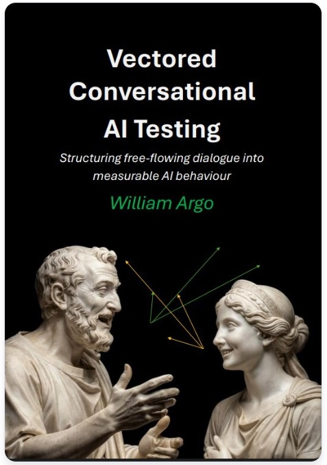

AI fails in deployment because it wasn’t tested with the correct methods.
We have developed practical behavioural testing methodologies that solo developers, AI startups and established teams can use immediately. Start today with shorter, practical tests -and as your expertise grows, you can run full realistic interaction evaluations. Learn how your AI systems cope or fail when real people and real work interact with them.
Essential for regulatory compliance. Also critical for protecting the commercial value of your project and reducing legal, financial & reputational risk. Identify failure modes before they become serious issues -and generate the recorded evidence necessary to prove your case.


“There is no magic prompt with which you can test AI. What you can do, is give AI real work under realistic conditions and observe what happens.”
LLM Inquisitor is a practical methodology for evaluating and stress-testing AI systems under real-world conditions. It exposes hidden failure modes, behavioural drift, data leakage, hallucinations, and workflow-level risks that traditional prompt testing cannot detect. Structured, scenario-based, and auditable, it gives developers, testers, and governance teams a repeatable way to understand and manage AI behaviour.
“Users do not ask one question and leave. They engage in multi-turn, free-flowing dialogue.”
Vectored Conversational AI Testing is a behavioural methodology built for real conversational interactions, not single-prompt checks. It evaluates how AI systems adapt, drift, recover, escalate, or fail across full conversational arcs. Structured, repeatable, auditable -designed for developers, governance teams, and standards bodies who need reliable behavioural evidence.
Support, resources and guidance for organisations that must comply with the EU AI Act. Find out whether the Act applies to your systems, understand what evidence is required, and learn how to test AI using real‑world conditions to meet the new legal obligations.
(C) William Argo
Contact via GitHub: AssimilatedHuman